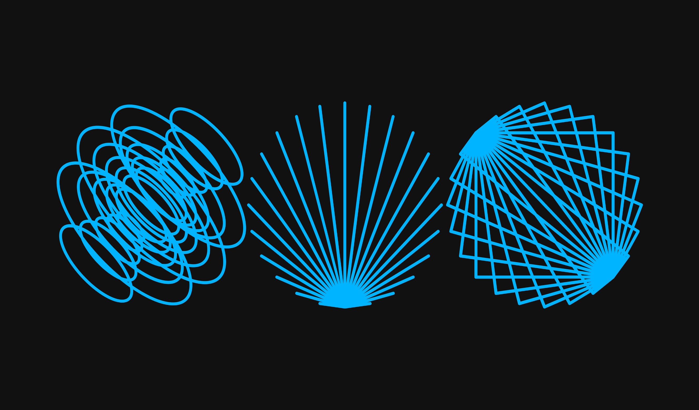
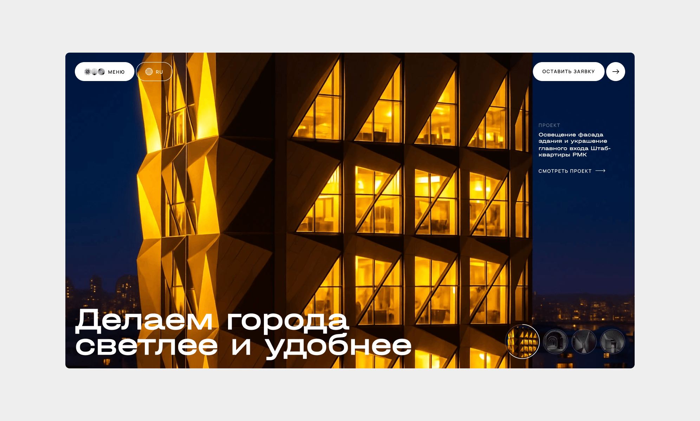
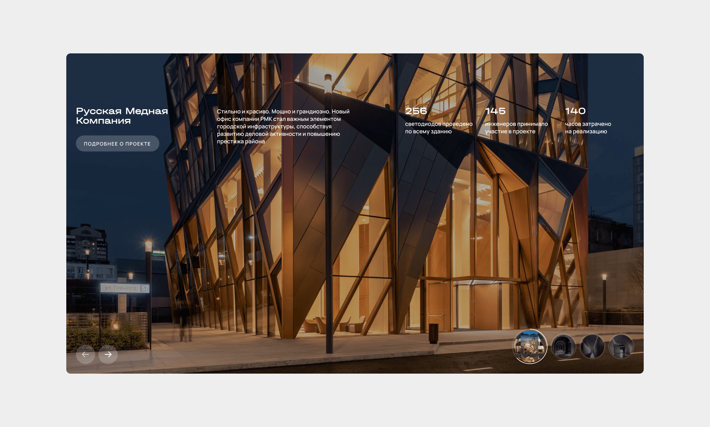
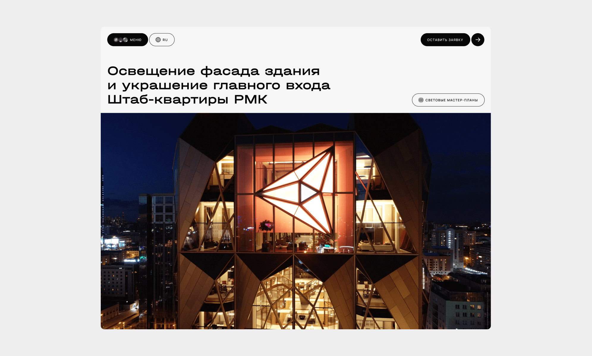
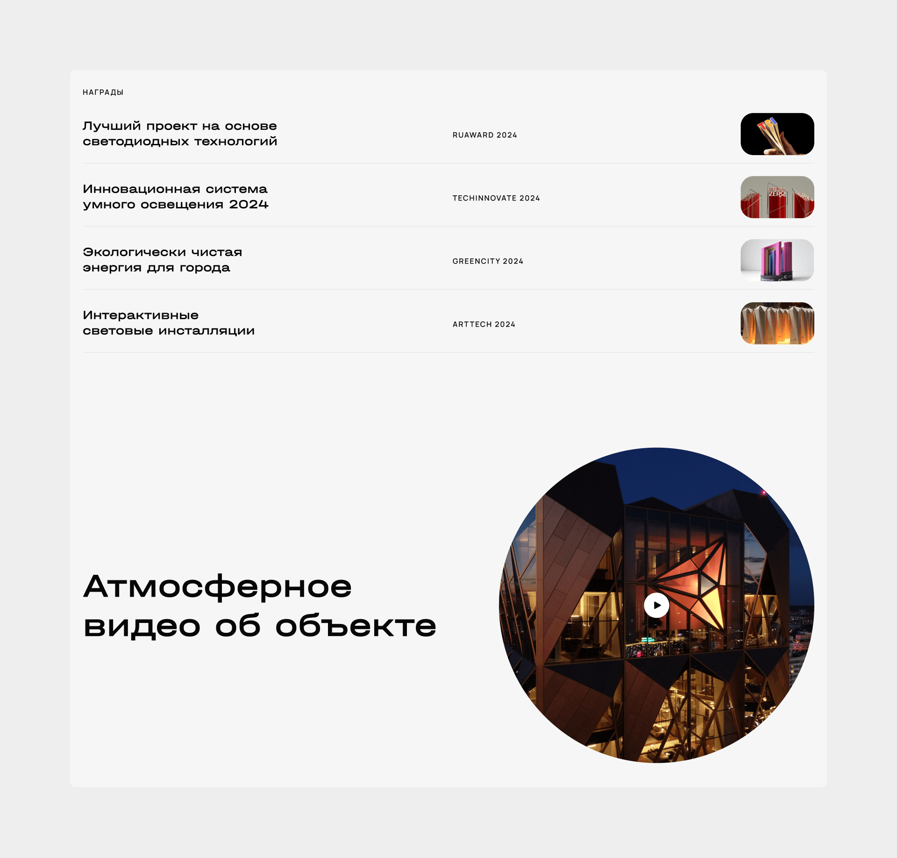

О проекте
МТ Электро — компания, которая разрабатывает комплексные светотехнические проекты по всей России и позиционируется как лидер в сфере светодизайна. Сначала клиент обратился в агентство за обновлением айдентики, а затем принял решение обновить и сайт, чтобы перенести новый визуальный язык бренда в цифровую среду.
В рамках проекта нужно было спроектировать прототип будущего сайта, разработать дизайн-концепцию и на её основе собрать дизайн всех страниц. Прототипирование я полностью взял на себя, а затем участвовал в разработке визуального направления сайта. Основой концепции стала идея света как живой среды: множество частиц объединяются в фирменные пульсары, формируют объекты и помогают людям ориентироваться в пространстве. Для первого экрана я дополнительно собрал анимацию с помощью нейросетей.
Проблема
После обновления айдентики возник разрыв:
- визуальный стиль стал современным
- сайт остался устаревшим
Это приводило к тому, что:
- бренд воспринимался слабее
- сайт не передавал уровень проектов
- пользователь не чувствовал экспертность компании

Задача
МТ Электро работает в сфере светотехнических решений и реализует комплексные проекты по всей России. Для таких компаний сайт — важный инструмент репутации. Он должен одновременно:
- передавать уровень экспертизы;
- демонстрировать масштаб проектов;
- формировать доверие у потенциальных клиентов;
- показывать новый визуальный язык бренда после обновления айдентики;
- работать как презентация подхода компании к свету, среде и проектированию.
Именно поэтому после обновления фирменного стиля следующим логичным шагом стало обновление сайта. Клиенту было важно собрать цельный цифровой образ компании, где айдентика, структура и графика работают как одна система.
Моя роль
Я отвечал за раннюю продуктовую стадию проекта.
Что я сделал:
- разработал структуру сайта
- спроектировал пользовательские сценарии
- создал прототип всех ключевых страниц
- участвовал в разработке визуальной концепции
- подготовил анимацию для первого экрана
Прототип полностью был реализован мной.
Архитектура сайта
Я выстроил структуру, которая последовательно раскрывает компанию.
Ключевые разделы:
- главная
- о компании
- услуги
- проекты
- контакты
Логика построена так, чтобы пользователь:
- понял, чем занимается компания
- увидел проекты
- сформировал доверие
- перешёл к контакту
Подход к прототипу
На этапе прототипирования я сфокусировался на базовых вещах:
- понятной структуре сайта;
- логике раскрытия компании;
- последовательной подаче услуг и проектов;
- удобной иерархии страниц;
- подготовке каркаса под будущую визуальную концепцию.
Концепция
После прототипа главным этапом стал поиск визуальной идеи. Концепция сформулирована так:
Свет состоит из множества частиц света, которые собираются в фирменные пульсары и даже в целые здания. Они всегда находятся в движении, помогая людям ориентироваться в темноте и находить правильный путь.
Она даёт сразу несколько слоёв смысла:
- свет как система частиц — визуальная база для графики;
- пульсары — фирменный узнаваемый элемент;
- движение — база для анимации;
- ориентирование в темноте — смысловая связь с функцией света;
- путь — метафора навигации, которая хорошо ложится и на UX сайта.
По сути, эта концепция позволяла сделать сайт не просто красивым, а содержательно связанным с темой бизнеса.

Концепция решает сразу несколько задач:
- связывает дизайн с продуктом компании
- делает интерфейс узнаваемым
- усиливает ощущение технологичности
- создаёт эмоциональное вовлечение
Дизайн
Визуальный стиль построен на:
- контрасте света и темноты
- динамике
- минимализме
- акцентных световых элементах
Пульсары используются как основной графический приём.
Главная

Главный экран стал ключевой точкой входа.
Я добавил анимацию, чтобы показать:
- движение света
- динамику среды
- технологичность компании
Анимация была собрана с помощью нейросетей и усиливает восприятие бренда.
СМОТРЕТЬ АНИМАЦИЮСтраница проекта
Один из ключевых экранов сайта.
Логика:
- визуальный вход
- описание задачи
- решение
- результат
- галерея
Это позволяет пользователю быстро оценить уровень компании.


Результат
В рамках проекта:
- разработана UX-архитектура сайта
- создан прототип ключевых страниц
- разработана концепция, связанная с продуктом компании
- подготовлено анимационное решение для первого экрана
Сайт стал логичным продолжением обновлённой айдентики.
Следующий кейс